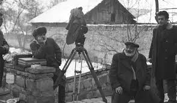

ართული კინო — ქართული კულტურის ნაწილი. სათავეებს იღებს XX საუკუნის დასაწყისიდან და არსებობის 100 წელზე მეტს მოიცავს. ქართული კინოს დაბადების თარიღად 1908 წელი ითვლება, როცა ვასილ ამაშუკელმა ბაქოში ფილმების გადაღება დაიწყო. დღემდე შემორჩენილი პირველი ფილმია ამაშუკელისვე „აკაკი წერეთლის მოგზაურობა რაჭა-ლეჩხუმში“ (1912), ხოლო პირველი მხატვრული ფილმი — გერმანე გოგიტიძის „ქრისტინე“ (1919).
A dolphin is an aquatic mammal in the clade Odontoceti (toothed whale). Dolphins belong to the families Delphinidae (the oceanic dolphins), Platanistidae (the Indian river dolphins), Iniidae (the New World river dolphins), Pontoporiidae (the brackish dolphins), and possibly extinct Lipotidae (baiji or Chinese river dolphin). There are 40 extant species named as dolphins.
ქართული ხალხური მუსიკა სათავეს უძველეს დროში იღებს. იგი თავიდანვე დაკავშირებული იყო ჩვენს წინაპართა ყოფასთან. მასში, როგორც სარკეში, არეკლილია ქართველი ერის უმდიდრესი ისტორია, სულიერი მისწრაფებანი, ზნეობრივი სისპეტაკე, კაცთმოყვარეობა, პატრიოტული და გმირული შემართება. ხალხური მუსიკა ოდითგანვე ერის სულიერ საზრდოს წარმოადგენდა და ქართველი კაცის ყოველ სამეურნეო თუ ყოფით საქმიანობას უკავშირდებოდა.